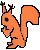

| Home | Software | Articles | Photos |
|---|
Realtime Radiosity Blog (2006-now) Realtime Radiosity Integration (2006) Fast Correct Soft Shadows (2004) VBE (vesa bios extension) implementations buglist (for Imphobia #13, approx 1997-1999) Midas 0.40 and 1.1.2 buglist (approx 1995-1997)


Osa čs pc demoscény (asi třetina obsahu, 2001-2003) Boj s klukama (překlad z Passionate Eye od Suzanne Vegy, 2000) Globální osvětlení do každé rodiny (referát na semináři Linux, 2000) Realtime Radiosity (diplomka, 1999-2000) Vše co jste chtěli vědět o plynulém scrollingu a nikde to nebylo. (referát na speciální seminář počítačové grafiky, 1999) Běžné algoritmy komprese dat, zvlášť Burrows-Wheeler (referát na semináři Linux, 1999) Umělá a lidská inteligence (kolem 1998) Vědomí (kolem 1998, korekce 2002) Implementace OOP v BP (článek v Pařeništi, kolem 1996) OOP obecně (článek v Pařeništi, kolem 1996) Přechod z realu do protektu v BP (článek v Pařeništi, kolem 1996)
Andělé všehomíra 92% (Realtime 63, 2000) Kufry pana Silberschmidta 73% (Realtime 58, 2000) Kluci nepláčou 93% (Realtime 55, 2000) Sen noci svatojánské 93% (Realtime 54, 1999) Osudná chvíle 95% (Realtime 53, 1999) Kanárek 58% (Realtime 52, 1999) Svůj mezi cizími 82% (Realtime 52, 1999)
Po přečtení několika článků v našich nejprodávanějších novinách (články byly prima ale byl v nich přesně opak toho co je pravda) jsem si říkal, že by bylo fajn, kdyby třeba lidi sami víc věděli, kdyby šli přímo po zdrojích a mohli přeskočit výplody našich vynikajících novinářů.A tak mě napadlo (nic lepšího jsem nevymyslel) aspoň sem občas přidat link na nějaké užitečné informace (když na něco narazím), které v masmédiích nejsou moc k vidění.
Mapa zamoření, novější model, 2004 Mapa zamoření - Mapa zamoření vzduchu v Praze oxidy dusíku, roční průměry (a další mapy pod tlačítkem seznam). Běžně několikanásobně překračované hygienické limity. Pomoc pro toho, kdo se chce stěhovat.
Online statistiky hlasování o všem - Hlasuj a dozvíš se kteří poslanci/senátoři hlasovali nejpodobněji. Fantastický nástroj, pomoc pri výběru koho volit. Statistiky hlasování o životním prostředí - Statistika jak jednotliví poslanci a strany hlasují pro a proti životnímu prostředí. Ačkoliv jsem měl určitou představu, čísla byla o dost drsnější.

Panáci vrzaví
špagátky potrhaný
uprostřed pavučin
čekají na sezónu
Jak přijít k roli?
Mám tělo zdřevěnělé,
principál se chechtá,
ukáže prstem,
ohne ukazovák,
zakýve:
Teď ty!
Hlasem panenčím,
ze svého koutka tence zapláču své
"všechno nebo nic"Už se zlobí,
dřevěnými pěstičkami teatrálně buší do prsou
pak do stolu
obojí je jeho.
"vykážu tě z pimprlátek"
hrozíMám stále stejnou ušmudlanou tvář
a dívat se umím jenom přímo
Takže neuhnu pohledem,
i když to vypadá drze.
Rezignuje a unaveně se pověsí za oponu.